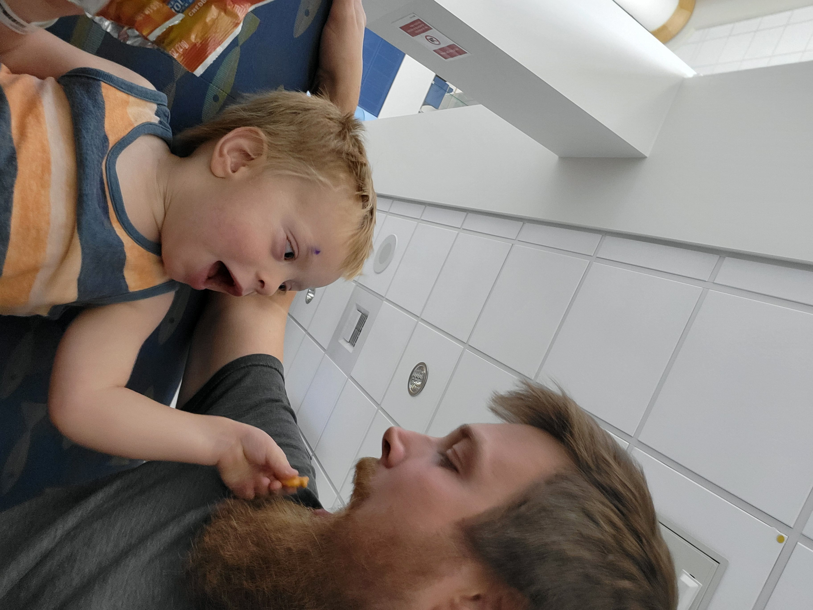

Long Road Ahead
July 23, 2026
We have officially received our first status update for Micaiah's retinoblastoma. We have been accustomed to receiving either good or neutral news, and this exam was consistent with that. The good news is that Micaiah's right eye is responding excellently to the treatment. The tumor mass has shrunk by about 50%, which he said was a better than average result! He currently gives that eye a greater than 90% chance of a full recovery.
The neutral news is that the left eye is still tenuous. Part of the problem with that eye is that the tumors caused the retina to detach from the back of the eye. He said the tumors in that eye shrank as well, but he is still not optimistic the eye can be saved. There are three things he said would put him over the edge to recommend removal of the left eye. 1. If the tumors start to grow again such that they risk spreading to other areas of the body. 2. If Micaiah's left eye starts to hurt him. I don't know what it all entails, but the doctor said if it causes him pain, that necessarily means it has gotten to a point where it is beyond saving. 3. If the retina doesn't reattach to the back wall of the eye. I don't remember the exact explanation, but apparently it would cause problems and he wouldn't be able to see out of the eye anyway. They are not recommending removal yet, but in his words, "it would be miraculous for that eye to be saved."
I don't deny the medical reality of Micaiah's situation, but we believe in a God who specializes in miracles. I see this news as no worse than what we've already been dealing with. The right eye has improved, and the left eye has not worsened. One concern is that the first round of treatment is usually the most effective, so we aren't out of the woods with his right eye yet, and his left eye could deteriorate quickly. Still, we are headed in the right direction.

Micaiah offering me some of his recovery snacks
We also received results back from Micaiah's genetic tests. Given the results, the doctor has ruled out any concerns for the rest of our family. The mutated gene that caused Micaiah's retinoblastoma is mosaic, meaning that it appears in some of his cells but not all. Given that information, the doctor said the mutation likely occurred very early in development—probably only one or two days after conception. Though Micaiah's offspring may be at increased risk for this, Elias and Samuel are in the clear.
Please join us in praising God for the good news we have received so far, and continue praying that God would do the miraculous for Micaiah's left eye.